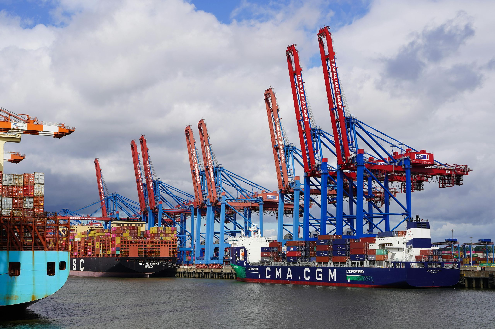

PortNet Maroc est le guichet unique national des procédures du commerce extérieur. Ce guide 2026 explique comment s’inscrire, créer son espace privé, souscrire aux services de la plateforme et comprendre le lien avec BADR et les principales formalités import-export au Maroc.
Ce qu'est PortNet
PortNet est une plateforme qui réunit en une même interface les acteurs du commerce extérieur : administrations, ports, opérateurs logistiques, transitaires, banques et entreprises. L'objectif est de faire circuler l'information et les documents entre ces intervenants sans multiplier les démarches séparées. La plateforme est exploitée par la société PORTNET S.A., dont le siège se trouve dans l'enceinte portuaire de Casablanca.
Il faut distinguer plusieurs portails, ce qui prête souvent à confusion :
- le portail institutionnel, qui présente l'organisme, ses services et ses actualités ;
- la plateforme de souscription, qui sert à créer son espace et à s'inscrire ;
- le guichet unique proprement dit, où se déroulent les démarches une fois l'abonnement actif.
Qui est concerné par l'inscription
Les conditions générales d'abonnement de PortNet sont établies par profil d'opérateur. On y retrouve notamment les importateurs, les transitaires, les agents maritimes et consignataires, les opérateurs de manutention et les banques.
Identifier son profil est la première décision à prendre : elle détermine les conditions applicables et les pièces à fournir. Une entreprise qui importe et exporte n'a pas les mêmes besoins qu'un prestataire logistique intervenant pour le compte de tiers.
Comment s’inscrire sur PortNet Maroc en 2026 ?
Pour s’inscrire sur PortNet Maroc, l’entreprise commence par identifier son profil d’opérateur, crée son espace privé, complète sa demande de souscription avec les informations et pièces demandées, puis suit le statut de son dossier. Les étapes et documents à fournir varient selon le profil.
- Identifier le profil de l’opérateur afin de connaître les conditions et pièces applicables.
- Créer l’espace privé sur la plateforme de souscription PortNet.
- Compléter la souscription aux services concernés et joindre les documents demandés.
- Suivre le dossier et répondre aux éventuelles demandes de complément avant l’activation des services.
Étape 1 : créer son espace privé
La création d'un espace privé sur la plateforme de souscription est le point de départ obligatoire. Sans cet espace, aucune démarche de souscription aux services de PortNet ou de la douane n'est possible.
Une fois l'espace créé, l'opérateur peut :
- consulter l'état de son inscription au système BADR de la douane ;
- souscrire au système de la douane et au guichet unique PortNet ;
- modifier ses informations sur le système de la douane via la démarche de souscription ;
- suivre le statut de son dossier ;
- gérer les demandes de modification, d'annulation et de restauration de son compte auprès de la douane.
L'authentification peut se faire par identifiant et mot de passe. PortNet a également mis en place, en partenariat avec l'Agence de Développement du Digital et la Direction Générale de la Sûreté Nationale, un accès par carte nationale d'identité électronique.
Étape 2 : souscrire aux services
La souscription suppose de renseigner les formulaires de la plateforme et d'y joindre les pièces demandées. Le dossier porte sur l'identification de l'entreprise, ses coordonnées, ses représentants et les utilisateurs qui auront accès au guichet unique. Un dossier incomplet est renvoyé pour complément, ce qui allonge le délai.
L'accès aux services fait ensuite l'objet d'un forfait. Les tarifs et modalités applicables doivent être vérifiés sur la page officielle des tarifs de PortNet, seule référence à jour : ils peuvent être modifiés par la plateforme et varient selon le profil de l'opérateur.
Vous préparez votre inscription et vous souhaitez sécuriser votre dossier dès le premier dépôt ? AFIM Consulting vous accompagne dans vos formalités administratives et douanières.
Demander une consultationCe que permet le guichet unique au quotidien
Une fois l'abonnement actif, PortNet devient l'interface de suivi des opérations : dépôt et suivi des demandes, échange d'informations avec les administrations et les partenaires de la chaîne logistique, consultation de l'avancement des dossiers depuis un tableau de bord unique.
La plateforme s'articule avec le système déclaratif de la douane. L'espace privé permet de suivre l'état de l'inscription au système BADR, dans lequel sont traitées les déclarations en douane. Cette articulation explique pourquoi l'inscription à PortNet précède, en pratique, la réalisation d'opérations régulières.
Points de vigilance
Tenir ses informations à jour
PortNet rappelle, conformément aux directives de la douane, le caractère obligatoire de l'actualisation des coordonnées du siège social des opérateurs via la plateforme de souscription. Une adresse obsolète peut bloquer un traitement au plus mauvais moment.
Vérifier les conditions de renouvellement
Les tarifs et modalités applicables — y compris les conditions de renouvellement de l'accès aux services — doivent être vérifiés sur la page officielle des tarifs de PortNet avant toute échéance. Anticiper cette vérification évite une interruption d'accès en pleine opération.
Gérer les accès utilisateurs
Plusieurs utilisateurs peuvent être rattachés à un même compte, et des délégations d'accès sont possibles. Il est prudent de tenir à jour la liste des personnes habilitées, en particulier lors d'un départ ou d'un changement de transitaire.
Ne pas confondre inscription et dédouanement
Être inscrit à PortNet ne dispense pas des formalités douanières. La déclaration reste une opération distincte, généralement réalisée par un transitaire ou un commissionnaire en douane agréé. Notre guide de l'exportation depuis le Maroc replace cette étape dans le parcours complet.
Questions fréquentes
L'accès aux services fait l'objet d'un forfait. Son montant et ses modalités doivent être vérifiés sur la page officielle des tarifs de PortNet, qui est la seule référence à jour.
La création de l'espace privé et la souscription sont des démarches que l'entreprise effectue pour son propre compte. En revanche, le dépôt des déclarations en douane est une opération distincte, généralement confiée à un transitaire ou à un commissionnaire en douane agréé.
PortNet est le guichet unique national des procédures du commerce extérieur. BADR est le système informatique de l'Administration des Douanes dans lequel sont traitées les déclarations en douane. Les deux sont articulés : depuis son espace PortNet, un opérateur peut notamment consulter l'état de son inscription au système BADR.
Le délai dépend de la complétude du dossier et du profil de l'opérateur. Un dossier incomplet est renvoyé pour complément, ce qui rallonge la procédure. PortNet met à disposition un guide utilisateur détaillant les étapes et les pièces attendues.
Sources officielles
- PortNet — Inscription des opérateurs économiques (souscription)
- PortNet — Guide utilisateur : inscription des opérateurs économiques
- PortNet — Nos tarifs
- PortNet — Portail institutionnel
- PortNet — Authentification via la CNIE
- Administration des Douanes et Impôts Indirects
Informations vérifiées le : . Les tarifs, forfaits et modalités de PortNet évoluent : vérifiez-les systématiquement sur la page officielle des tarifs avant toute démarche.
Besoin d'un accompagnement sur votre dossier ?
Votre projet d'importation ou d'exportation nécessite un accompagnement personnalisé ? Contactez AFIM Consulting. Nous étudions votre produit, votre marché cible et les démarches réellement applicables à votre situation.